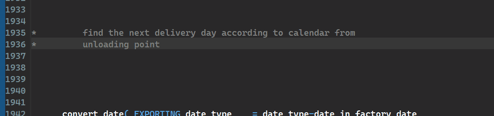

ABAP Quick Fixes - Replace Full Line Comment With Inline Comment
In case you're not fan of full line comments and you prefer to use inline comment, this is the quick fix for you.
It simply replaces * with " in the comment.
